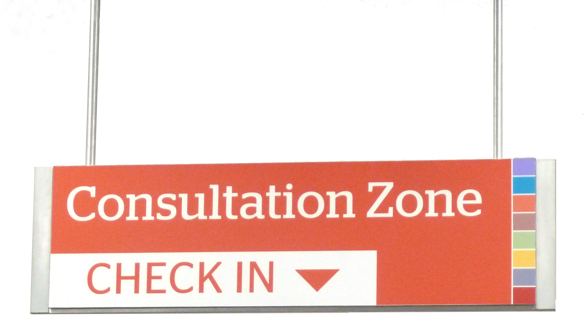

Data Services in Academic Libraries
opportunities and challenges in the coming five years
Timothy Norris - Data Curation Fellow - tnorris@miami.edu
University of Miami Libraries - March 31 2017
University of Miami Libraries - March 31 2017
follow along >> https://tibbben.github.io/um.data.librarian/
The Research Data Life Cycle

The Broader Context
- Libraries developing Research Data Services (RDS) remained flat in 2015-16
- RDS is more common in research institutions
... the 2013 OSTP memo ...
ACRL Research Planning and Review Committee (2016). 2016 top trends in academic libraries: A review of the trends and issues affecting academic libraries in higher education. College & Research Libraries News, 77(6), 274-281. http://crln.acrl.org/content/77/6/274.full#sec-1
Agency Response
adapted from http://bit.ly/FedOASummary
- The service model
- Teaching
- Repository development
Overview
- The service model
- Teaching
- Repository development
The Service Model
- Providing reference support for finding and citing data
- Creating web guides for data and data repositories
... finding and cleaning data ...
... building data collections ...
Tenopir, Carol, Dane Hughes, Suzie Allard, Mike Frame, Ben Birch, Lynn Baird, Robert Sandusky, Madison Langseth, and Andrew Lundeen. 2015. "Research Data Services in Academic Libraries: Data Intensive Roles for the Future?." Journal of eScience Librarianship 4(2): e1085. http://dx.doi.org/10.7191/jeslib.2015.1085
Collection Building
- teaching datasets
- research datasets

The Service Model
informational / consultative service
- data analysis
- outreach/collaboration across campus
- metadata support
- DMP review
- embedded data managers
The Service Model
the learning commons
- writing center model?
- grad student tutors
- referral for data services
The Service Model
web based guides to data and repositories
The Service Model
discipline repository guidance
Discipline Specific (academic)
- ICPSR - https://www.icpsr.umich.edu/icpsrweb/index.jsp
- DRYAD - http://datadryad.org/
- OpenGeoportal - http://opengeoportal.org/
Discipline Specific (governement)
- NCEI - https://www.ncei.noaa.gov/
- GenBank - https://www.ncbi.nlm.nih.gov/genbank/
Data Sources
- World Bank - http://data.worldbank.org/
- U.S. Census Bureau - https://www.census.gov/data.html
The Service Model
general repository guidance
General (academic)
- the Dataverse network - http://dataverse.org/
- Zenodo - https://zenodo.org/
General (third party)
- Figshare - https://figshare.com/
The Service Model
technical service
- laboratory / departmental / disciplinary repository support
- data selection / identification
- policy development
- repository deposit support
- metadata creation / transformation
- deaccensioning data from repositories
- The service model
- Teaching
- Repository development
Overview
- The service model
- Teaching
- Repository development
Teaching support
- classroom support
- for credit classes
- in the library
Teaching Support
classroom support
- Broader context of Information Literacy
- RDAP and "curriculum mapping"
- departmental seminars - classroom support
- outreach - contact
- file naming and file system orgnanization
- tagging conversation
school.of.data
- purpose and motivation
- administrative hurdles
- curriculum: curation, management, both?
- software carpentry
- shared open-source curriculum - github
- reflections
purpose.and.motivation
- 2014-15 Data Wrangling Seminars
- Class support module for first and second year graduate students
- Engineering, History, Marine Science, Medical Campus ...
- Well received, great conversations (especially file management and tagging)
- 2015 assessment of curation needs at UM
- Rescue the past or capture the future?
- Teaching predicament: students are all over the map
- Little standardized curation practice at UM
- Design and teach course best use of time
- Graduate student seminar
- Discipline agnostic (but really science and social science)
- Try for the sell at the Rosenstiel School of Marine and Atmospheric Science
administrative.hurdles
- finding a home
- making the pitch
- advertising
librarians know everyone ...
curriculum
- data curation
library - data wrangling / analysis
discipline specific tools - data management
professional and personal - all of the above
DataONE Education Modules
https://www.dataone.org/education-module
Oregon State (Amanda Whitmire)
https://figshare.com/articles/GRAD_521_Research_Data_Management_Syllabus_and_Lesson_Plans/1003834
University of Edinburgh (MANTRA)
http://datalib.edina.ac.uk/mantra/
https://www.dataone.org/education-module
Oregon State (Amanda Whitmire)
https://figshare.com/articles/GRAD_521_Research_Data_Management_Syllabus_and_Lesson_Plans/1003834
University of Edinburgh (MANTRA)
http://datalib.edina.ac.uk/mantra/
github.curriculum.devel
- very slick
- plain text materials (except images)
- reveal.js presentation framework
- practice what you preach
reflections
- best way forward?
- recognized need, but ...
- student motivations?
- place on curriculum?
- who pays?
students or departments?
reflections
- best way forward?
- student feedback?
- generally good ...
- too much reading
- needs to be more units
lecture and lab class
reflections
- best way forward?
- Should this be a requirement, if so how?
- who teaches?
- undergrad or grad?
- what department?
- The service model
- Teaching
- Repository development
Overview
- The service model
- Teaching
- Repository development
Repository Development
- BePress
- Content DM
- something new ... ?
Fallaw, C., Dunham, E., Wickes, E., Strong, D., Stein, A., Zhang, Q., . . . Imker, H. J. (2916). Overly Honest Data Repository Development. code{4}lib (34). http://journal.code4lib.org/articles/11980
Repository Development
- software development
- repository development/management
- preservation librarian
- policy development
- data curators
- metadata librarian
- data librarian
- design specialists
Fallaw, C., Dunham, E., Wickes, E., Strong, D., Stein, A., Zhang, Q., . . . Imker, H. J. (2916). Overly Honest Data Repository Development. code{4}lib (34). http://journal.code4lib.org/articles/11980
- The service model
- Teaching
- Repository development
Overview
- The service model
- Teaching
- Repository development
Collaboration
Critical Librarianship
- who do we serve?
- why?
- what role do we play in social change?
THANKS!!
Timothy Norris - Data Curation Fellow - tnorris@miami.edu
University of Miami Libraries - March 31 2017
University of Miami Libraries - March 31 2017